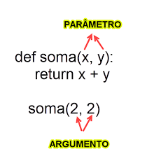

Novas possibilidades de aplicação de funções em Python.
book_2 Arguentos Nomeads e Padrão
book_2 ARGS e KWARGS
book_2 Callback Functions
book_2 Funções Avançados
Argumentos Posicionais: São passados para a função na ordem em que os parâmetros foram definidos.
Argumentos Nomeados: São passados para a função especificando o nome do parâmetro, permitindo que sejam fornecidos em qualquer ordem.
Em Python, você pode passar argumentos de duas formas: por posição ou por nome.

# Definindo a função
def apresentar_pessoa(nome, idade, cidade):
print(f"{nome} tem {idade} anos e mora em {cidade}")
# Chamando a função com argumentos posicionais
apresentar_pessoa("Maria", 25, "São Paulo")
# Chamando a função com argumentos nomeados (pode mudar a ordem)
apresentar_pessoa(cidade="Rio de Janeiro", nome="João", idade=30)
# Chamando a função misturando (posicionais primeiro, depois nomeados)
apresentar_pessoa("Ana", idade=28, cidade="Salvador")
Você pode definir valores padrão para parâmetros, tornando-os opcionais.
def criar_perfil(nome, idade, cidade="Não informada", profissao="Não informada"):
return {
"nome": nome,
"idade": idade,
"cidade": cidade,
"profissao": profissao
}
# Usando apenas argumentos obrigatórios
perfil1 = criar_perfil("Carlos", 35)
print(perfil1)
# Sobrescrevendo alguns padrões
perfil2 = criar_perfil("Julia", 28, profissao="Engenheira")
print(perfil2)
# Sobrescrevendo todos
perfil3 = criar_perfil("Pedro", 40, "Brasília", "Professor")
print(perfil3)
Objetivo: Crie uma função cadastrar_produto(nome,
preco, categoria="Geral", estoque=0, ativo=True) que retorne um
dicionário com todos os dados do produto.
Teste a função com:
# Definindo a função
def cadastrar_produto(nome, preco, categoria="Geral", estoque=0, ativo=True):
return {
"nome": nome,
"preco": preco,
"categoria": categoria,
"estoque": estoque,
"ativo": ativo
}
# Testando a função
produto1 = cadastrar_produto("Produto A", 29.99)
print(produto1)
produto2 = cadastrar_produto("Produto B", 49.99, "Eletrônicos", 10)
print(produto2)
produto3 = cadastrar_produto("Produto C", 19.99, "Roupas", 5, False)
print(produto3)
O *args permite que uma função receba um número variável de argumentos posicionais.
def somar(*numeros):
"""Soma qualquer quantidade de números"""
total = 0
for num in numeros:
total += num
return total
# Chamando a função com diferentes quantidades de argumentos
print(somar(1, 2, 3))
print(somar(10, 20, 30, 40))
print(somar(5))
É possível usar *args juntamente com argumentos fixos
def exibir_info(nome, *cursos):
print(f"Aluno: {nome}")
print("Cursos matriculados:")
for curso in cursos:
print(f" - {curso}")
exibir_info("Maria", "Python", "JavaScript", "SQL")
O **kwargs permite que uma função receba um número variável de argumentos nomeados (chave=valor).
def criar_usuario(**dados):
"""Cria um usuário com dados variáveis"""
print("Dados do usuário:")
for chave, valor in dados.items( ):
print(f" {chave}: {valor}")
criar_usuario(nome="João", idade=30, cidade="Salvador")
criar_usuario(nome="Ana", email="ana@email.com", telefone="71-99999-9999")
def registrar_venda(vendedor, *produtos, **detalhes):
print(f"Vendedor: {vendedor}")
print(f"Produtos vendidos: {', '.join(produtos)}")
print("Detalhes adicionais:")
for chave, valor in detalhes.items( ):
print(f" {chave}: {valor}")
# Chamando a função
registrar_venda("Carlos","Notebook", "Mouse", "Teclado",
forma_pagamento="Cartão",parcelas=3,desconto=10)
# Desempacotando lista com *
numeros = [1, 2, 3, 4, 5]
print(somar(*numeros)) # Equivalente a somar(1, 2, 3, 4, 5)
# Desempacotando dicionário com **
dados_usuario = {
"nome": "Pedro",
"idade": 35,
"email": "pedro@email.com"
}
criar_usuario(**dados_usuario)
Objetivo: Crie uma função calcular_estatisticas(*numeros) que receba uma quantidade variável de números e retorne um dicionário com:
def calcular_estatisticas(*numeros):
if not numeros:
return {"quantidade": 0, "soma": 0, "media": 0, "maior": None, "menor": None}
estatisticas = {
"quantidade": len(numeros),
"soma": sum(numeros),
"media": sum(numeros) / len(numeros),
"maior": max(numeros),
"menor": min(numeros)
}
return estatisticas
Em Python, funções são objetos de primeira classe, ou seja, podem ser passadas como argumentos para outras funções.
Uma função que recebe outra função como argumento é chamada de callback function.
Isso permite criar funções mais genéricas e reutilizáveis.
def saudar_formal(nome):
return f"Prezado(a) {nome}, seja bem-vindo(a)!"
def saudar_informal(nome):
return f"E aí, {nome}! Tudo bem?"
def processar_saudacao(nome, funcao_saudacao):
"""Processa uma saudação usando a função fornecida"""
mensagem = funcao_saudacao(nome)
print(mensagem)
# Passando funções como argumentos
processar_saudacao("Maria", saudar_formal)
processar_saudacao("João", saudar_informal)
É possível usar *args juntamente com argumentos fixos
def exibir_info(nome, *cursos):
print(f"Aluno: {nome}")
print("Cursos matriculados:")
for curso in cursos:
print(f" - {curso}")
exibir_info("Maria", "Python", "JavaScript", "SQL")
Uma forma de utilizar este recurso é em funções que precisam receber um número variável de argumentos, como em operações de processamento de dados.
def aplicar_desconto_10(preco):
return preco * 0.9
def aplicar_multa(preco):
return preco * 1.2
def calcular_preco_final(preco_original, funcao_altera_preco):
"""Calcula o preço final aplicando uma função de alteração de preço"""
novo_preco = funcao_altera_preco(preco_original)
return round(novo_preco, 2)
# Testando a função com diferentes estratégias de desconto
preco = 100
print(f"Preço original: R$ {preco}")
print(f"Com 10% de desconto: R$ {calcular_preco_final(preco, aplicar_desconto_10)}")
print(f"Com multa 20% de acréscimo: R$ {calcular_preco_final(preco, aplicar_multa)}")
def processar_lista(lista, funcao_processamento):
"""Aplica uma função a cada elemento da lista"""
resultados = []
for item in lista:
resultado = funcao_processamento(item)
resultados.append(resultado)
return resultados
def dobrar(x):
return x * 2
def quadrado(x):
return x ** 2
numeros = [1, 2, 3, 4, 5]
print(processar_lista(numeros, dobrar))
print(processar_lista(numeros, quadrado))
Objetivo: Crie uma função executar_operacao(num1, num2, operacao) que receba dois números e uma função de operação. Crie também quatro funções: somar, subtrair, multiplicar e dividir. Teste executar_operacao com todas as operações usando os números 10 e 5.
def executar_operacao(num1, num2, operacao):
return operacao(num1, num2)
def somar(a, b):
return a + b
def subtrair(a, b):
return a - b
def multiplicar(a, b):
return a * b
def dividir(a, b):
if b != 0:
return a / b
return None
# Testando a função com diferentes operações
print(executar_operacao(10, 5, somar))
print(executar_operacao(10, 5, subtrair))
print(executar_operacao(10, 5, multiplicar))
print(executar_operacao(10, 5, dividir))
Este mecanismo aplica uma função a cada elemento de uma coleção.
numeros = [1, 2, 3, 4, 5]
dobrados = list(map(lambda x: x * 2, numeros))
print(dobrados) # [2, 4, 6, 8, 10]
Este mecanismo filtra elementos de uma coleção com base em uma condição.
numeros = [1, 2, 3, 4, 5]
pares = list(filter(lambda x: x % 2 == 0, numeros))
print(pares) # [2, 4]
Este mecanismo ordena elementos de uma coleção com base em uma função.
# Ordem crescente
numeros = [5, 2, 9, 1, 5, 6]
ordenados = sorted(numeros)
print(ordenados)
# Ordem decrescente
numeros = [5, 2, 9, 1, 5, 6]
ordenados_desc = sorted(numeros, reverse=True)
print(ordenados_desc)
# Ordem por tamanho
palavras = ["Python", "é", "incrível"]
ordenadas = sorted(palavras, key=len)
print(ordenadas) # ['é', 'Python', 'incrível']
Este mecanismo reduz uma coleção a um único valor com base em uma função.
Para usar reduce, você precisa importar do módulo functools.
from functools import reduce
numeros = [1, 2, 3, 4, 5]
soma = reduce(lambda x, y: x + y, numeros)
print(soma)
Objetivo: Vamos criar um sistema bancário funcional com menu interativo. O sistema devem oferecer as seguintes opções:
Assuma que o banco já possui 3 contas correntes cadastradas e armazena as informações em um dicionário no formato:
contas = {
"123": {"nome": "Alice", "saldo": 1000.0},
"456": {"nome": "Bob", "saldo": 1500.0},
"789": {"nome": "Charlie", "saldo": 2000.0}
}
# Sistema Bancário Simples com Funções
# Contas pré-cadastradas --------------------------------------
contas = {
"123": {"nome": "Alice", "saldo": 1000.0},
"456": {"nome": "Bob", "saldo": 1500.0},
"789": {"nome": "Charlie", "saldo": 2000.0}
}
# Funções do sistema bancário -------------------------------------
def depositar(conta_id, valor):
if conta_id in contas and valor > 0:
contas[conta_id]["saldo"] += valor
return True
return False
def sacar(conta_id, valor):
if conta_id in contas and valor > 0:
if contas[conta_id]["saldo"] >= valor:
contas[conta_id]["saldo"] -= valor
return True
return False
def transferir(conta_origem, conta_destino, valor):
if (conta_origem in contas) and (conta_destino in contas) and (valor > 0):
if contas[conta_origem]["saldo"] >= valor:
contas[conta_origem]["saldo"] -= valor
contas[conta_destino]["saldo"] += valor
return True
return False
def consultar_saldo(conta_id):
if conta_id in contas:
return contas[conta_id]["saldo"]
return None
# Menu interativo -----------------------------------------------
def menu():
while True:
print("\n--- Menu do Banco ---")
print("1. Depositar")
print("2. Sacar")
print("3. Transferir")
print("4. Consultar Saldo")
print("5. Sair")
escolha = input("Escolha uma opção: ")
if escolha == "1": # Depositar
conta_id = input("Número da conta: ")
valor = float(input("Valor a depositar: "))
if depositar(conta_id, valor):
print("Depósito realizado com sucesso.")
else:
print("Erro no depósito. Verifique os dados.")
elif escolha == "2": # Sacar
conta_id = input("Número da conta: ")
valor = float(input("Valor a sacar: "))
if sacar(conta_id, valor):
print("Saque realizado com sucesso.")
else:
print("Erro no saque. Verifique os dados.")
elif escolha == "3": # Transferir
conta_origem = input("Conta de origem: ")
conta_destino = input("Conta de destino: ")
valor = float(input("Valor a transferir: "))
if transferir(conta_origem, conta_destino, valor):
print("Transferência realizada com sucesso.")
else:
print("Erro na transferência. Verifique os dados.")
elif escolha == "4": # Consultar Saldo
conta_id = input("Número da conta: ")
saldo = consultar_saldo(conta_id)
if saldo is not None:
print(f"Saldo da conta {conta_id}: R$ {saldo:.2f}")
else:
print("Conta não encontrada.")
elif escolha == "5": # Sair
print("Saindo do sistema. Até logo!")
break
else:
print("Opção inválida. Tente novamente.")
# Iniciando o sistema bancário --------------------------------
menu()